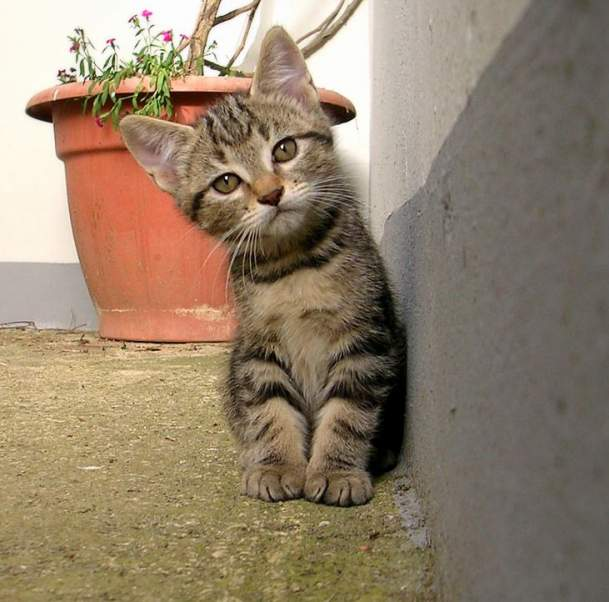
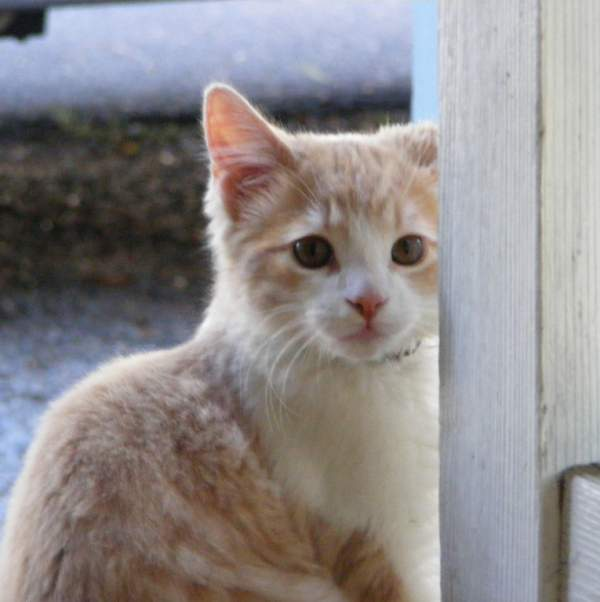
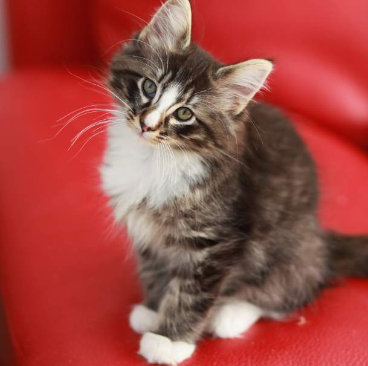
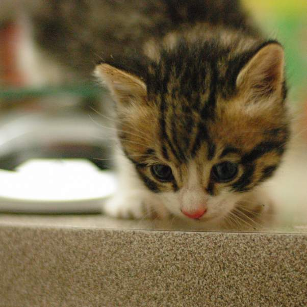
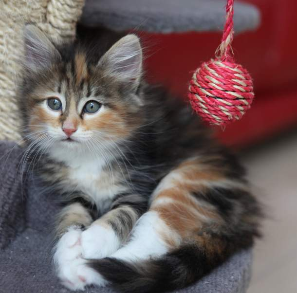

Kitten Bob

Bob is a really judgemental kitten. Look at his gaze. Even if Bob is only 3 months old, he seems to be very knowledge cat
Kitten Steve

Steve really likes to stare through the windows. He's almost one year old and likes to wander in the forest
Kitten Katrin

Katrin is one of the most majestic cats. She's the same age as Steve. She enjoys sleeping near humans
Kitten Lucky

Lucky is youngest and smallest of the kittens in this pack. She's 2 weeks old
Kitten Star

Star really likes to play at her cat tree. Star is 6 weeks old